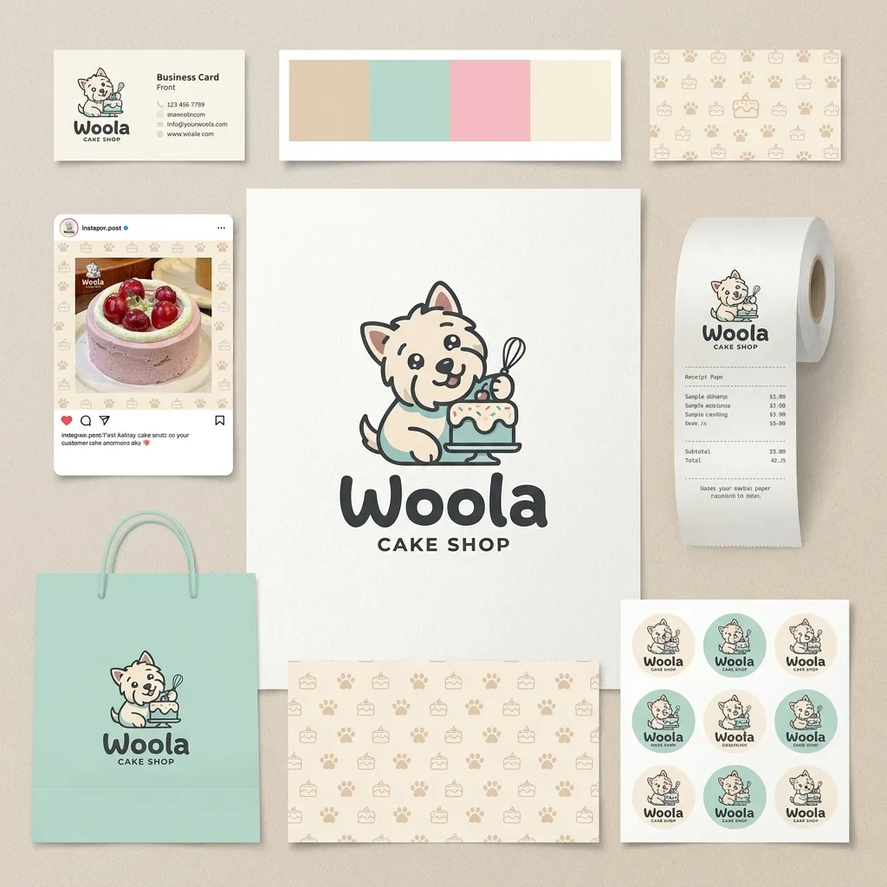

Brand & Space / PROJECT 02
Woola Cake Shop
「Woola」是一个面向年轻女性客群的精品蛋糕咖啡店，以一只圆嘟嘟的小狗为品牌 IP。
- ROLE
- 品牌识别与视觉系统设计
- TIME
- 项目年份待确认
- TOOLS
- 设计工具清单未提供
- TYPE
- Visual design study
- STATUS
- Independent visual study

01 / ONE-LINE CONCEPT
One-line concept
「Woola」是一个面向年轻女性客群的精品蛋糕咖啡店，以一只圆嘟嘟的小狗为品牌 IP。
02 / VISUAL SYSTEM
Visual system
- 角色 IP：小狗 Woola（主视觉、名片、贴纸、徽章多场景复用）
- 主色：薄荷绿 / 蜜桃粉 / 暖米色 / 焦糖棕
- 延展：纸袋 / 外卖杯 / 蛋糕盒 / 烘焙纸 / 杯套 / 托盘
- 门店：墙面壁画 + 木地板蜡封 + 大理石展柜，视觉与外带一致
04 / APPLICATIONS
Applications
05 / FINAL OUTPUT
Final output
「Woola」是一个面向年轻女性客群的精品蛋糕咖啡店，以一只圆嘟嘟的小狗为品牌 IP。整套系统覆盖品牌识别 / 包装 / 门店空间，让品牌同时具备线上传播的可爱与线下的高级感。
CONTINUE EXPLORING